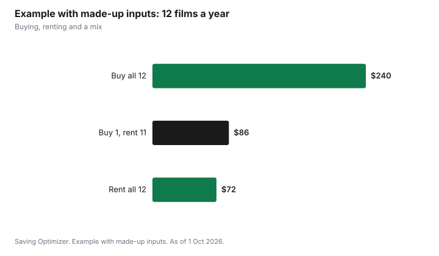

Entertainment · Canada
Buying vs Renting Digital Movies in Canada: A Simple Rule
Rent a digital movie if you expect to watch it once or twice, and buy it only if you will watch it often enough that the rentals would cost more than the purchase. A simple rule: multiply the number of times you realistically expect to watch by the rental price, and buy only if that total is higher than the purchase price. Rental windows are short. In the Apple TV app in Canada, Apple says you have 30 days to start a rented movie and 48 hours to finish once you start. A digital purchase is tied to the store's account and app, so read the store's terms. Before paying at all, check your library: many lend DVDs and Blu-rays and offer free streaming services with a card.
Key takeaways
- Rule: buy only if (expected viewings × rental price) is more than the purchase price.
- Apple TV app rentals in Canada: 30 days to start; 48 hours to finish once you start.
- A digital purchase lives in one store's account and app. Read the store's terms before building a large library.
- Digital prices change. Wishlist films you plan to buy and watch for a discount.
- Library first: Toronto Public Library, for example, offers hoopla and Kanopy streaming and lends DVDs and Blu-rays.
- Example with made-up inputs: a family that rents 12 films a year at $6 spends $72; buying the same films at $20 would cost $240.
Prices
Digital movies are usually offered to rent or buy at different prices, and new releases often cost more for the first weeks. Prices vary between stores and change often, so compare the store you use with the price of other ways to watch, such as a subscription you already pay for or the library.
| Line | Your numbers |
|---|---|
| Rental price | |
| Purchase price | |
| Times you expect to watch in the next few years | |
| Rentals total = viewings × rental price | |
| Decision | Buy if rentals total > purchase price; otherwise rent |
Children's films change the maths. A favourite animated film can be watched dozens of times, so buying makes sense quickly. An adult drama watched once is a rental. The guide to kids' streaming and franchise windows covers when family films reach subscription services.
Rental windows
Rentals expire. Apple's Canadian support guide for the Apple TV app says you have 30 days to begin watching a rented movie, and once you start, you can play it as many times as you want within 48 hours. During the rental, you can download it on one device at a time and stream it on another. Other stores set their own windows, which are shown before you rent.
| Rule | Apple TV app |
|---|---|
| Time to start watching | 30 days from rental |
| Time to finish after starting | 48 hours, with unlimited plays |
| Devices | Download on one device at a time and stream on another during the rental |
Plan a rental for a night when you can finish it, or a weekend when the household can watch together within the 48 hours.
Ownership limits
Buying a digital movie usually means buying the right to watch it through the store's app on supported devices, under the store's terms. It is not the same as owning a disc you can lend or sell. If you move to a different device ecosystem, your purchases may not follow you. If you value a film enough to keep it for many years, compare the digital price with a disc, which you can resell, lend or watch without an internet connection on a player.
| Factor | Digital purchase | Disc (DVD or Blu-ray) |
|---|---|---|
| Convenience | Instant, on phones and TVs | Needs a player |
| Lending and resale | Generally not possible | Possible |
| Changing ecosystems | Purchases may not follow you | Works in any compatible player |
| Storage | None | Shelf space |
| Library option | Some library streaming | Libraries lend discs |
Sales
Digital stores change prices and run sales from time to time. If you plan to buy a film, add it to a wishlist in your store and wait for a lower price. Bundles of a series can be cheaper than buying each film, but only if you want all of them.
Library alternatives
Public libraries are the cheapest source of movies. Toronto Public Library lends DVDs and Blu-rays and lists hoopla and Kanopy among its streaming video services, which cardholders can use free. Other libraries offer similar services; the selection and monthly limits vary by library. See library PressReader, Kanopy and hoopla for how these work.
- Search the library catalogue before renting.
- Place a hold on a new release disc as soon as it is ordered.
- Use library streaming for documentaries, classics and world cinema.
- Combine with free, ad-supported streaming; see free legal streaming.
Renting compared with a subscription month
Before renting several films in one month, compare the total with one month of a streaming service that carries them. If three or four films you want are on one service, a single month of that service may cost less than renting them, and you can cancel afterwards. The opposite is also true: if you only want one new film, renting it beats subscribing for a month. Rotating services, one at a time, works well with this approach; see rotating streaming services. Keep a short list of films you want to see, note where each one is available, and decide each month whether to rent, subscribe or wait for the library.
Sharing in the household
Digital purchases are tied to an account, so sharing depends on the store's family features. Some stores let family members share purchases under set rules; read your store's family sharing terms before buying a film for a child on a parent's account. The guide to Apple Family Sharing covers one example. A disc, by contrast, can be lent to anyone.
Example with made-up inputs: a family's year
These numbers are an example with made-up inputs. They are not store prices. A family watches 12 new films at home in a year. Renting each at $6 costs $72. Buying each at $20 would cost $240. They buy one animated film the children will rewatch at $20 and rent the other 11 ($66), for $86. They also borrow six films from the library for free.
| Approach | Cost |
|---|---|
| Buy all 12 at $20 | $240 |
| Rent all 12 at $6 | $72 |
| Buy 1 favourite, rent 11 | $86 |
| Plus 6 library films | $0 |

Plan
- Check the library and your current subscriptions first.
- If paying, decide with the viewings rule.
- Rent for a night when you can finish within the window.
- Wishlist films you plan to buy and wait for a price drop.
- Consider a disc for films you want to keep for many years.
Sources
- Apple Support (Canada), Movies in the Apple TV app (tvOS user guide), support.apple.com/en-ca, as of 1 Oct 2026. 30 days to start; 48 hours to finish; download on one device and stream on another.
- Toronto Public Library, Movies and video, tpl.ca, as of 1 Oct 2026. DVDs and Blu-rays; streaming video through hoopla, Kanopy and Broadway on Demand.
- The family, films and prices in the example are an example with made-up inputs.
Frequently asked questions
Should I rent or buy a digital movie?
Multiply the number of times you expect to watch by the rental price. Buy only if that total is more than the purchase price; otherwise rent.
How long do I have to watch a rented movie on Apple TV in Canada?
Apple's Canadian support guide says you have 30 days to start watching a rental and 48 hours to finish once you start, with unlimited plays in that time.
Do I own a digital movie I buy?
You buy the right to watch it through the store's app under its terms. You generally cannot lend or resell it, and purchases may not move with you to another ecosystem. Read the store's terms.
Is renting cheaper than subscribing for a month?
It depends on how many films you want. If several are on one service, a single month of that service may cost less than renting them. For one film, renting is usually cheaper.
Can I watch movies free with a library card?
Many libraries lend DVDs and Blu-rays and offer streaming services. Toronto Public Library lists hoopla and Kanopy among its streaming video services.
Researched and drafted with AI assistance and fact-checked against official Canadian sources. How we create content.
Disclosure: Saving Optimizer may earn a commission if a partner link is added later, such as a streaming, digital store or cash-back offer type. No partnership is claimed on this page, and no store or service is ranked. Education only.